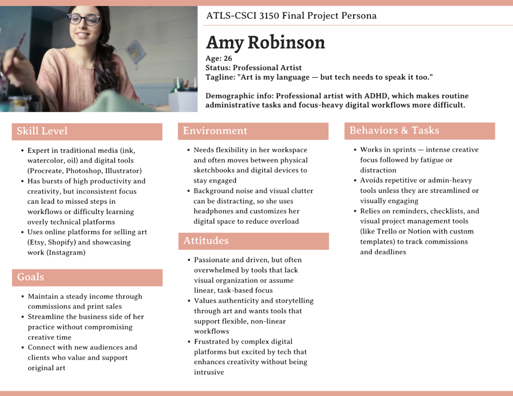

Art Parts Website Redesign
Accessibility-focused redesign for a non-profit creative reuse center in Boulder, CO!
Overview
Art Parts Boulder is a non-profit creative reuse center that accepts donations of arts and crafts supplies and resells them at highly discounted prices. Our team conducted a comprehensive accessibility audit and redesigned key pages to improve usability for all users, including those with disabilities.
The Problem
Through heuristic evaluation and user testing, we identified several accessibility issues:
- Text spanning full page width made reading difficult
- Animated buttons made it hard to read all options
- Poor information architecture on the "Inspire" page
- Inadequate alt text for functional images
Research & Discovery
Persona Development

We created Amy, a professional artist with visual impairments who wants to donate supplies and volunteer. Through cognitive walkthroughs, we identified pain points in her user journey:
- Scenario 1 (Donating): Amy struggled to understand the donation process due to slow fade-ins and couldn't find the shop address
- Scenario 2 (Volunteering): Information about volunteer activities was hidden in dropdown menus with small text
Stakeholder Interview
We interviewed Megan Moriarty, Executive Director, who provided valuable insights:
- The website's primary purpose is to attract new visitors to the physical store
- The "Inspire" page needed reorganization—it combined too many unrelated topics
- Users frequently asked about classes, but Art Parts doesn't host any
Key Accessibility Issues
Poor Text Hierarchy
WCAG 2.4.10: The "Inspire" page lacked clear heading structure and logical content flow
Inadequate Alt Text
WCAG 1.1.1: Logo link didn't indicate it navigated to homepage; decorative images weren't marked as such
Readability Issues
WCAG 1.4.8: Text spanning full viewport width made reading difficult for users with cognitive disabilities
Design Solutions

1. Removed Problematic Animations
Eliminated fade-in effects on text and images, allowing users to see all content immediately. Added subtle navbar hover animations for feedback instead.
2. Restructured Information Architecture
Renamed "Inspire" to "Create" and proposed a separate "Classes" page to clarify that Art Parts doesn't host classes but provides recommendations.
3. Improved Text Layout
Reduced horizontal text span and increased spacing for better readability. Made text the first focus when landing on pages rather than images or videos.
4. Enhanced Navigation
Made buttons static with clear labels. Added descriptive page titles like "Home – Art Parts" instead of just "Art Parts".
5. Fixed Alt Text
Updated logo alt text to indicate homepage navigation. Added proper descriptions for informational images and blank alt text for decorative ones.
Impact & Results
- Improved WCAG Compliance: Addressed 8+ Level A and AA violations
- Better User Experience: Cognitive walkthroughs showed reduced confusion and faster task completion
- Stakeholder Buy-in: Megan confirmed our findings aligned with internal concerns and expressed interest in implementing changes
- Implementable Design: All proposed changes are feasible within their SquareSpace platform
Key Learnings
- Animations, while visually appealing, can significantly hinder accessibility
- Context from stakeholders is crucial—our initial "Classes" redesign missed the mark until we understood the actual use case
- Small changes (alt text, button labels, text width) can have outsized impact on accessibility
- Working within platform constraints (SquareSpace) requires creative but realistic solutions
Next Steps
If this project continued, we would:
- Create a high-fidelity prototype of the entire site in Figma for user testing
- Implement anchor links for direct navigation to specific sections
- Redesign the Donate page to better highlight monetary donation options
- Conduct usability testing with users who have various disabilities